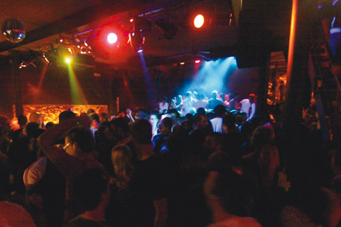

Menorca, única también de noche
 Menorca luce espléndida de día, pero también lo hace de noche. Cuando el sol se sumerge bajo el manto del Mediterráneo, despierta otra isla. Menorca tiene marcha, sin duda, pero olvídese de las grandes discotecas. También en este aspecto este trocito de tierra ha apostado por otro tipo de ocio, en el que de nuevo el equilibrio es el factor diferencial.
Menorca luce espléndida de día, pero también lo hace de noche. Cuando el sol se sumerge bajo el manto del Mediterráneo, despierta otra isla. Menorca tiene marcha, sin duda, pero olvídese de las grandes discotecas. También en este aspecto este trocito de tierra ha apostado por otro tipo de ocio, en el que de nuevo el equilibrio es el factor diferencial.
 Si después de la cena le apetece salir y descubrir qué ofrece la Isla de noche, le recomendamos que visite el puerto de Ciutadella o el de Maó. Sin duda, son los dos principales puntos de ocio nocturno en la Isla, donde puede encontrar locales variados, desde ambientes chill-out hasta bares musicales de todo tipo.
Si después de la cena le apetece salir y descubrir qué ofrece la Isla de noche, le recomendamos que visite el puerto de Ciutadella o el de Maó. Sin duda, son los dos principales puntos de ocio nocturno en la Isla, donde puede encontrar locales variados, desde ambientes chill-out hasta bares musicales de todo tipo.
Aunque si usted quiere vivir una experiencia diferente, no puede irse de la Isla sin visitar la Cova den Xoroi. Un enclave único ubicado en la urbanización de Cala en Porter (Alaior), donde la leyenda sitúa la trágica historia de amor entre un hombre misterioso, Xoroi, y una menorquina. Esta gruta abierta al mar, con indescriptibles vistas sobre un acantilado, acoge la discoteca más personal de Menorca. Un espacio donde observar unas puestas de sol espectaculares, disfrutar de un aperitivo durante el día, dejarse llevar por la música chill out cuando cae la tarde o desentumecer el esqueleto guiados por la música de prestigiosos disc jockeys cuando la luna ya ha tomado el relevo al sol.
Ya ve, también por la noche, Menorca es única e irrepetible. De nuevo, simplemente Menorca.